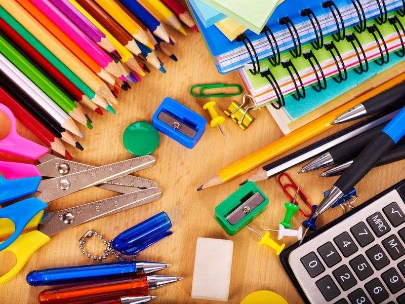
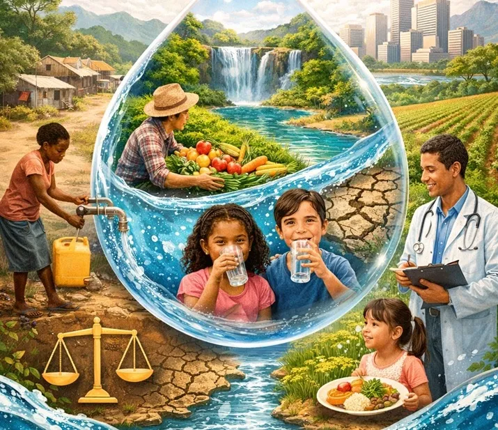
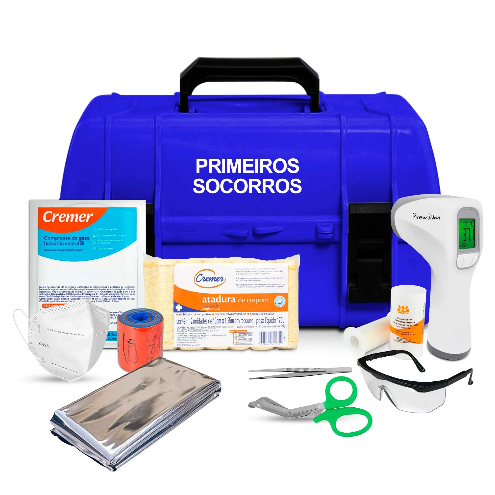

Educação
Projeto Mochila Cheia
Focado na educação. Consiste em arrecadar fundos para enviar kits escolares (cadernos, lápis, estojos) e livros para abrigos e escolas improvisadas. O objetivo é criar espaços seguros onde as crianças possam continuar aprendendo e brincando.

Saúde
Projeto Água Limpa e Pão
Focado na sobrevivência. Trabalha com a distribuição mensal de cestas com alimentos não perecíveis e pastilhas de purificação de água, essenciais em bairros onde a infraestrutura de encanamento e saneamento foi destruída.

Saúde
Projeto Caixa de Cuidado
Focado em saúde e higiene. Montagem e envio de kits contendo itens de primeiros socorros (gaze, antissépticos, curativos) e produtos de higiene pessoal (sabonete, escovas de dente e absorventes) para ajudar a prevenir doenças em áreas superlotadas.